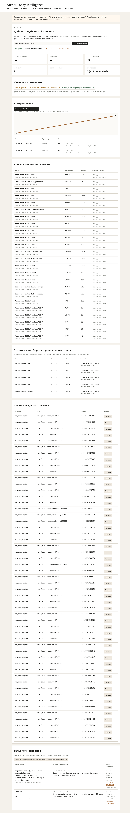

Скриншот реального локального запуска. На экране показаны два снимка книги: 990 495 → 990 524 просмотра, формула изменения +29 и исходные timestamp/URL.
| Группа | Категории | Окно |
|---|---|---|
| Общий контекст | popular, trending, новые популярные, последние публикации | первые 20 |
| Жанры Сергея | Альтернативная история, Исторические приключения, Попаданцы во времени; popular + trending | top-25 |
На контрольном снимке книги Сергея найдены на позициях №9, №11, №23 и №25 в «Исторических приключениях / popular», а также №18 в «Попаданцах во времени / popular». Отсутствие в top-25 не означает отсутствие во всём рейтинге.
990 524 − 990 495 = +29.| Показатель | Результат |
|---|---|
| Целевых URL | 24 |
| URL хотя бы с одним capture | 14 (58,3%) |
| Найдено Wayback captures | 53 |
| Плотность | 0–9 на произведение, нерегулярно |
| Решение | массовый backfill не запускать; использовать как контрольные evidence-точки |
Из-за правил Author.Today продукт не выпускает массовый или авторизованный сборщик комментариев. Реальная ограниченная выборка выбирается владельцем вручную в обычном браузере и импортируется локально. Пароли, cookies, OTP, Authorization-заголовки и browser profile отклоняются.
git clone https://github.com/Topleess/author-today-intelligence.git cd author-today-intelligence docker compose --profile sync run --rm public-sync docker compose up -d controller curl http://127.0.0.1:8787/api/health
Контракт API read-only: попытка POST /api/summary должна вернуть HTTP 405. Unit/contract tests и privacy scan входят в проверку репозитория.
Дата пилотного среза: 17 июля 2026 года. Статистические сутки Author.Today: Москва, UTC+3. Подробные доказательства и команды находятся в README и docs репозитория.